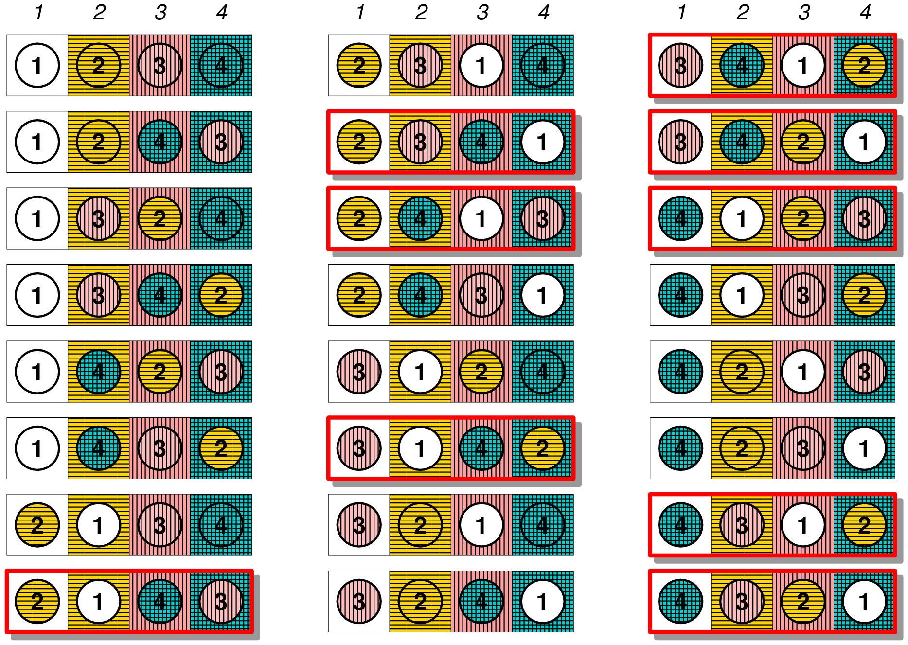

C++ Keylogger

What is a keylogger and how does it work? I asked myself this
question when I took "Ethical Hacking and Counter-Measures" at FIU
and was learning about malicious types of software. Essentially, a
keylogger works by implementing an event listener; the program keeps
iterating in a loop and when a key is pressed, the function GetAsyncKeyState is checked
and if the least significant bit is set to 1 (0x0001 in hex), then the key
is written to a text document to keep a record of the key strokes. This does
not look at whether the key is held or for how long, just that it is
pressed.
DISCLAIMER: THIS PROGRAM IS FOR DEMONSTRATION PURPOSES ONLY AND IS
NOT INTENDED FOR MALICIOUS USE; I AM NOT RESPONSIBLE FOR ANY TROUBLE/DAMAGE
CAUSED, ANY SOCIAL ENGINEERING, AND ANY OTHER SORT OF
ILLEGAL ACTIVITY A RESULT OF USING THIS PROGRAM.
I take NO responsibility and/or liability for how you choose to use any of the source code available here.
Original date uploaded: 4PM, 12 August 2019.
Derangements
In combinatorial mathematics, a derangement is a permutation of the elements of a set,
such that no element appears in its original position. In other words,
derangement is a permutation that has no fixed points.
Wikipedia article: https://en.wikipedia.org/wiki/Derangement
EXAMPLE Suppose that a professor gave a test to 4 students – A, B, C, and D – and wants to let them grade each other's tests. Of course, no student should grade his or her own test. How many ways could the professor hand the tests back to the students for grading, such that no student received his or her own test back? Out of 24 possible permutations (4!) for handing back the tests:
ABCD, ABDC, ACBD, ACDB, ADBC, ADCB, BACD, BADC, BCAD,
BCDA, BDAC, BDCA, CABD, CADB, CBAD, CBDA, CDAB, CDBA,
DABC, DACB, DBAC, DBCA, DCAB, DCBA.
DABC, BADC, CADB, BCDA, BDAC, CDAB, DCAB, CDBA, and DCBA are the
only nine derangements.
To calculate the number of derangements - also called the
subfactorial of n (represented as !n) - use the following formula:
!n = [(n!)/e],
where n is the number of elements, e = 2.718281828, and [ ]
represents the nearest integer function. Example:
!4 = [(4!)/e]
!4 = [24/e]
!4 = [8.829]
!4 = 9
The purpose of this program is for situations where students peer grade assignments/tests or a secret santa type event.
Source code still needs work.
Original date uploaded: 4PM, 12 August 2019.
Google IgniteCS
During my time at FIU, I was involved with UPE's (Upsilon Pi Epsilon) chapter as a volunteer at Google IgniteCS program. I originally became a part of this program in January 2018 as a programming instructor and taught students at Paul W. Bell Middle School how to program in Python. The science teacher I was working with at the time had our team come up with a project to help her acquire a grant. We decided on buying Raspberry Pi robot cars and laptops to program them. By this time, Fall of 2018, I had become a team leader for my group at Paul Bell. By the end of the semester, the robots were built by the students (roughly 15 students total) and then were programmed to do simple tasks like drive around and print values to a console from data collected from the peripherals (humidity and temperature sensors). Our team had successfully completed the project and Ms. Menocal had acquired the grant. By next semester in Spring 2019, I had become the Committee Membership Director, and was responsible for helping with recruitment for the program, as well as attending all meetings, among other duties with the three other committee members. I really enjoyed my time with the program, and what made it better was how excited the students were every time they saw us, eager to learn.
Original date uploaded: 3PM, 12 August 2019.